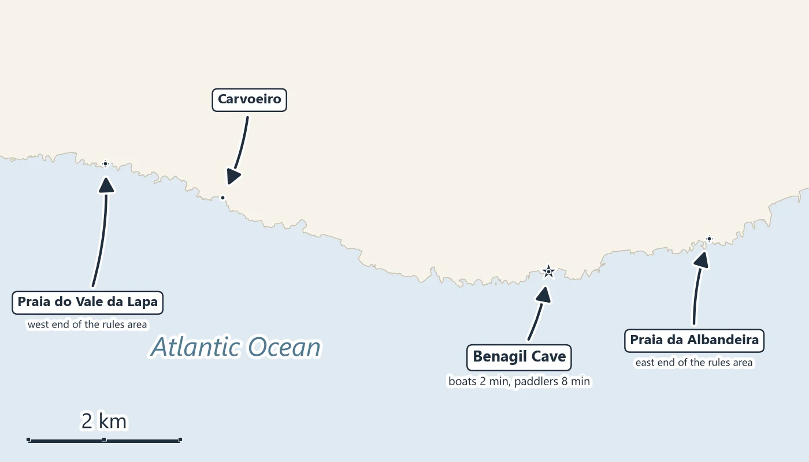

The cave has been a regulated space since August 2024. The rules are a navigation instruction from the Capitania do Porto de Portimão, Edital 019/2024, amended on 2 July 2025 by Edital 009/2025. Below is each rule in the Portuguese original, what it means for a visitor, and where it comes from.
You can go into Benagil Cave on a licensed boat, for two minutes, or on a guided kayak or SUP, for up to eight. You cannot swim in, you cannot land on the beach inside, and since July 2025 you cannot take a kayak or SUP out in the caves area without a guide. The closest boat launch is Carvoeiro; its small boat has a calendar just below.
From Carvoeiro: Benagil Caves and Praia da Marinha Boat Trip (CarvoeiroCaves® (Vela Brilhante. Lda.)) — 4.9★ from 1,374 reviews, from $39 on 11 November 2026. A small boat off Carvoeiro's beach to the Benagil caves and Praia da Marinha. Free cancellation up to 24 hours before.
Sea permitting: the skipper or guide decides on the day, and the Capitania do Porto de Portimão can close the caves by a notice to mariners when the sea does not allow visits. Check the sea conditions the evening before, and favour dates with free cancellation.
Each rule below quotes Edital 019/2024 (signed in Portimão on 30 July 2024, in force ten working days after publication) or the amendment that replaced it, Edital 009/2025 (signed 2 July 2025, in force on publication). The Capitania's page lists Edital 009/2025 as the latest change to the Benagil rules as of November 2026.
“O acesso ao interior do Algar de Benagil de visitantes a nado ou com meios auxiliares de flutuação”
Swimming into the cave, or floating in on anything, is banned for everyone. It is one of the activities the Edital lists as interdicted for all craft, “podendo ser excecionalmente autorizadas pelas entidades competentes” (the authorities can make exceptions).
Edital 019/2024, Instrução 4.ª, n.º 2, b). Edital 019/2024 (PDF)
“O desembarque ou uso balnear do areal, no interior do Algar de Benagil ou em qualquer outra gruta similar que possa ser usada para uso balnear na área das Grutas de Benagil”
Nobody steps onto the sand inside Benagil, or inside any similar cave in the area, from a boat or a kayak. The Edital explains why: the beach inside lies entirely within the cliff-fall risk zone, and the blocks on it come from earlier falls.
Edital 019/2024, Instrução 4.ª, n.º 2, a). Edital 019/2024 (PDF)
“Até 5 (cinco) PM em simultâneo, cabendo aos mestres e comandantes das embarcações avaliar permanentemente as condições de segurança no local e, se necessário, abortar a visita; […] O tempo de visita ao algar para as PM é de 2 minutos”
Motorised boats enter and leave by the western entrance (“entrada poente”), stay two minutes, and no more than five may be inside at once. The skipper has to keep judging the conditions and abort the visit if needed. The 2025 amendment replaced the 2024 limit of three boats under 12 m, or one boat over 12 m. Boats are also told to keep out of places where they cannot turn and leave bow to the sea.
Edital 009/2025, amending Instrução 4.ª, n.º 2, h); Edital 019/2024, Instrução 4.ª, n.º 1, c) and i) iii. Edital 009/2025 (PDF)
“Não são permitidos passeios e alugueres de PNM sem guia […] As PNM operam em grupos de 6 (seis) plataformas acompanhadas por uma plataforma com 1 (um) guia que deverá possuir certificação em primeiros socorros e suporte básico de vida. Em simultâneo, poderão operar no interior do Algar de Benagil 14 (catorze) PNM”
Kayaks, SUPs, canoes and boards (“plataformas náuticas não motorizadas”) may not go out or be rented without a guide. They go in groups of six with one guide certified in first aid and basic life support, enter and leave by the eastern entrance in single file with a U-turn inside, and stay no more than eight minutes; up to fourteen may be inside at once (seven under the 2024 text). The guide's kayak carries a whistle, a knife, a first-aid kit, a tow line and a way to call the shore. Tour kayaks carry the company's name and a number on both sides.
Edital 009/2025, amending Instrução 4.ª, n.º 1, g), i), j), k) and n.º 2, h). Edital 009/2025 (PDF). More on the kayak page.
“Os visitantes, operadores marítimo-turísticos, tripulantes de embarcação e clientes, são obrigados a usar equipamento de proteção individual, composto por colete salva-vidas durante toda a duração da visita”
Everyone wears a life jacket for the whole visit, and the rules ask for a helmet (standard EN 1385) near the cliffs, caves and sinkholes where stones can fall. The operators supply both.
Edital 019/2024 and Edital 009/2025, Instrução 4.ª, n.º 1, i) iv. Edital 009/2025 (PDF)
“O acesso às grutas de Benagil com visibilidade inferior a 1000 metros; […] Navegação noturna (designadamente, entre o pôr-do-sol e o nascer do sol)”
No cave visits when visibility is under 1,000 metres; no navigation in the area between sunset and sunrise; no scuba or free-diving in or around the caves (except authorised scientific work); no spearfishing or recreational fishing at or near the caves. Approach slowly, perpendicular to the coast, and wait your turn outside instead of crowding in.
Edital 019/2024, Instrução 4.ª, n.º 1, b), d) and n.º 2, c) to f). Edital 019/2024 (PDF)

The rules apply to the public, tour operators, private boats and any craft within 500 metres of the coast between Praia do Vale da Lapa and Praia da Albandeira, in the municipality of Lagoa, and to access from the beaches. The area lies inside the Parque Natural Marinho do Recife do Algarve – Pedra do Valado. Enforcement is by the Polícia Marítima and the other local authorities.
No wave height is written into the rules. Visits need sea and weather conditions that allow them and no notice to mariners restricting them. Under a separate Edital of October 2023, the Capitania bans visits to the caves whenever conditions do not allow them to run safely, by a notice to mariners (“aviso aos navegantes”) published on the Hydrographic Institute's local-warnings page and the Capitania's page, and broadcast on VHF channel 16. Below that, each skipper or guide decides on the day.
Edital 324/2023, 11 October 2023. Edital 324/2023 (PDF)
Winter. The rules have no closed season, so the cave is “open” all year. In practice the Atlantic decides: from November to March there are more days when the boats cannot go in, and fewer departures. The boats and kayaks on this site listed bookable dates in mid-November 2026. Book a date with free cancellation, and look at the sea conditions on the evening before.
What each listing does when the sea closes the cave varies: some view the caves from a distance, some refund, some do not. The dolphin-trip page quotes three of them.
The “€2,500 per swimmer” that circulates online is not in the Edital.
In January 2026 the Capitania stopped licensing landings of boat-tour passengers on beaches that have no footpath down, in Lagoa and Albufeira, for the 2026 bathing season. These are the “barbecue” trips, ashore on a cove reachable only by sea. Its survey of 15 January 2026 found the sand shrinking and, on many of these beaches, inside the cliff-fall risk zones at any state of tide; the ban stays while those conditions last. It names Praia do Barranco das Belharucas, Praia do Pau, Praia do Pontal and Praia do Barranco in Lagoa, and Praia da Ponta Grande and Praia da Maré das Porcas in Albufeira. It does not change the Benagil cave rules.
Edital 01/2026, 26 January 2026. Edital 01/2026 (PDF)
The small boat from Carvoeiro, the closest launch: the cave and Praia da Marinha from the water.
Check dates →A guided kayak from Benagil beach: the longest legal time inside, in a group of six with a guide.
See the kayak tour →Prices, ratings and review counts as listed on GetYourGuide on 11 November 2026; operators use seasonal pricing, so treat them as the shape of the market, not a quote.
Not found at an issuer: a published wave-height limit for the cave, and a page from the Câmara Municipal de Lagoa setting out its own rules for Benagil beach. The Edital lists the Lagoa council among the bodies it consulted.
No. Edital 019/2024 bans access to the inside of the Algar de Benagil “a nado ou com meios auxiliares de flutuação”, swimming or with flotation aids, and the 2025 amendment left that rule as it was. The legal ways in are a licensed boat for two minutes or a guided kayak or SUP group for up to eight.
No. Landing on, or using, the sand inside the Algar de Benagil, or in any similar cave in the area, is banned for boats and paddle craft alike, unless the authorities make an exception. You see the inside beach from the water.
No. Since Edital 009/2025 (2 July 2025) no outings or rentals of paddle craft without a guide are allowed in the area. Guided groups are six craft with one guide certified in first aid and basic life support, entering by the eastern entrance.
Two minutes for a motorised boat, entering and leaving by the western entrance, with up to five boats inside at once. Guided paddle groups get up to eight minutes, with up to fourteen craft inside at once.
The Edital sets them by rule. Breaking the main rules (landing, swimming in, the boat and paddle limits, the time limits, night navigation, diving and fishing) carries a fine of €2,200 to €44,000. A private visitor without the required life jacket or helmet faces €25 to €20,000 under the 2025 amendment, and one band for grave environmental offences reaches €216,000. The “€2,500 per swimmer” repeated online is not in the Edital.
The rules have no closed season. What closes the cave is the sea: the Capitania bans visits by a notice to mariners when conditions do not allow them, and the skippers and guides decide on the day. The tours on this page listed bookable dates in mid-November 2026; expect more cancelled days from November to March.
Two layers. The Capitania do Porto de Portimão can ban cave visits by a notice to mariners when the sea or weather does not allow them (Edital 324/2023); the notices are published on the Hydrographic Institute's local-warnings page and the Capitania's page and broadcast on VHF channel 16. Below that, each skipper or guide judges the conditions and can call off or shorten the visit.